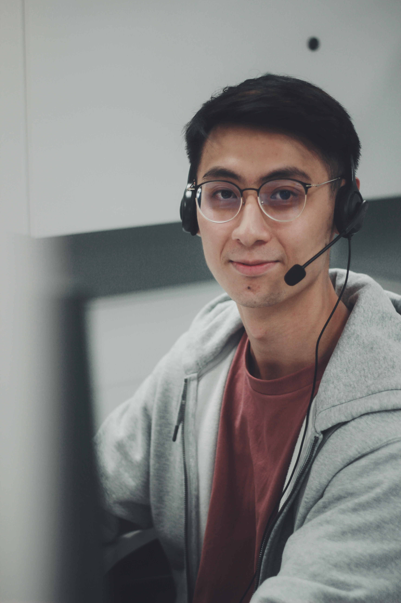

Name: Lee Hern Yi (Singaporean)
Mobile Phone: +65 9827 5085
Email: Hyileenet@gmail.com

Education
Nanyang Technological University
School of Electrical and Electronics Engineering (Aug 2018 - Jun 2022)
- Bachelor of Engineering (Electrical and Electronics Engineering)
Academic Projects
-
NTU Final Year Project
Smart light powered soft robots with multicolor response (Aug 2021 - May 2022)
- Learnt to use Fusion 360 software to design and build 3D models
- Learnt lab safety rules and equipment handling
- Learnt to use 3D bioprinter and equipment failure troubleshooting
- Managed to use magnetic fields to control soft robot movement and incorporated multicolor responses
-
NTU Design and Innovation Project
Wearable technologies for monitoring physical and cognitive fitnes of officers (Aug 2020 - Nov 2020)
- Collaborated with HTX for this project as a prototype for future use
- Developed and designed a mobile application GUI from scratch using Python software on Raspberry Pi
- Learnt Python and used Kivy, KivyMD to design the mobile application GUI
- Synced the mobile application GUI to an Emotiv Headset and allowed transfer of brainwaves data, analysing and sorting to data to be displayed on the GUI as different fatigue levels
-
NTU introduction to Design and Innovation Project
Design and Audio Amplification System (Jan 2020 - Apr 2020)
- Developed and designed and audio amplication system to allow continuous output at a fixed volume for fluctuating input signal by regulating gain
- Constructed the hardware of the system from scratch which consists of 3 sub-systems
- Used various software programmes such as LabView, NI ELVIS and equipment such as function generator and oscilloscope to collect and analyse data
Personal Projects
-
Udemy "The Complete 2023 Web Development Bootcamp - Dr. Angela Yu
-
General Assembly "Software Engineering Immersive" pre-admission projects
Work Experiences
-
Marvell Asia Pte Ltd
Analog Layout Engineer (Jul 2022 - Present)
- Helped to develop training materials (basics of semiconductor theory and processes) for new hires and entry level position engineers
Layout engineer for TPS 65nm PMIC Project (Nov 2022 - Jun 2023)
- Helped to do multiple testcase to check for process errors
- Compiled a document that summarise the process to help other engineer better understand the process flow
- Honed and developed troubleshooting skills in both DRC and LVS checks
- Assisted in the completion of the vr_dac block
Project Lead for GF 55nm PMIC Project (Jun 2023 - Present)
- First entry level engineer in Analog Layout team to lead a project
- Managed project timeline and initial set up
- Streamlined meetings and improved productivity of team
- Developed Project Management skills by attending online courses and working with Senior Managers and Directors
- Comfortably worked with other engineers from USA, Taiwan, and Bangladesh in the Project
RC Committee member (Aug 2022 -Present)
- Helped to plan social and recreational events for company bonding
- Worked with other people from other functional groups and departments to plan successful events
- Took on different roles as In-charge for different events to gain new skills
- Marvell Year end DnD 2022
- Marvell Office Games day
- Marvell CNY Lunch and Office Lion Dance performace
- Marvell Connect 2023 Technical Conference
- Marvell Annual 5km run
-
Philips Singapore Pte Ltd
Electrical and Software Development Intern (Jan 2021 - Jun 2021)
- Assisted in daily operations such as troubleshooting and testing (Waveform, ASO)
- Learnt Java to help out with development of mobile application using Android Studio
- Learnt basic C+ to help out with firmware development using Keil Microvision software and helped to develop a dynamic timer box used for tests
- Learnt Arduino and successfully carried out an individual Arduino Project under the guidance of a Senior Engineer which involves data transfer from hardware components onto an online dashboard
- Learnt and practice my skills in hardware development such as soldering (SMT, THT) and using of equipments
Skills/Competencies
-
Languages: Proficient in English and Mandarin
-
Software Applications: Microsoft Office, Fusion 360 CAD, Android Studio, Arduino, Cadence EDA, Virtuoso, Custom Compiler, TCAD(TSUPREM, MEDICI)
-
Software Programming: C, C+, Python, Labview, ARM Assembly Language, Java, front end web development ( HTML, CSS, Javascript,) Unix Command
-
Equipment/Hardware: Soldering, Oscilloscope, Function Generator, Multimeter, 3D Printer
Hobbies
Fitness and exercise
Football
Volleyball
Cooking and Baking